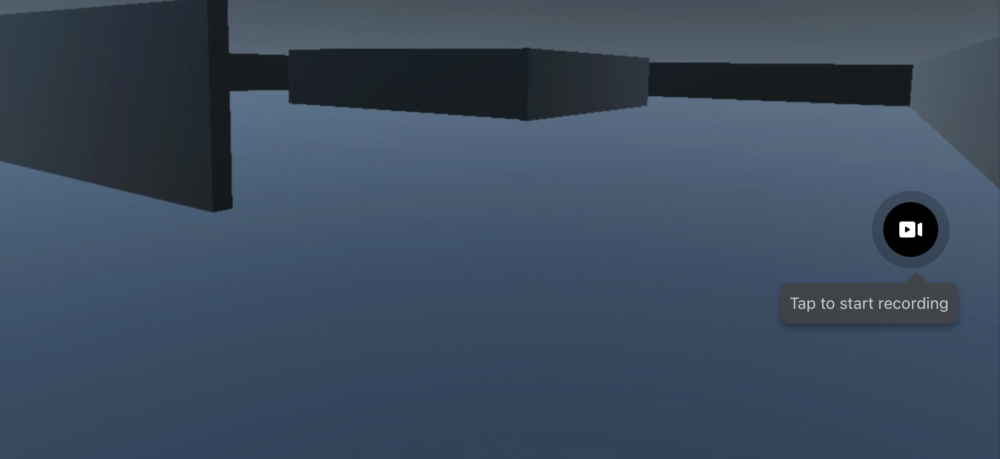
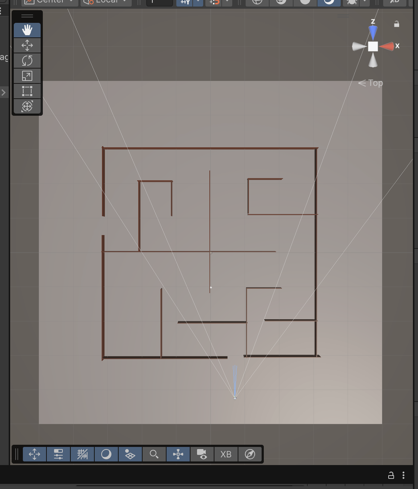

Humans naturally use sound and spatial awareness in their day to day lives. As one of our main 5 senses, sound is a way that we understand our environment, navigate through it, and help us protect ourselves. The main goal of XR systems, especially Virtual Realities technologies is realistic immersion. However, most XR systems are predominantly visual based and don’t explore or leverage the power of audio and the role it plays in our physical environment. There is limited research on audio being used as the primary means of navigation. This project aims to explore the power of audio in low visibility environments where visual cues are not prominent. This Audio Guided Maze Navigation explores whether spatial audio alone can support sufficient navigation in a virtual reality environment.
Describe the challenges you faced while building the project. For example: setting up the Meta XR SDK, getting controllers to work, setting up spatial audio, etc.
Describe features you would add in the future. For example: multiple maze levels, multiplayer support, or dynamic maze generation. add how this can the help people and contribute the future development
Write your summary here. Wrap up the project — what did you build, what did you learn, and what would you do differently?


Write your summary here. Wrap up the project — what did you build, what did you learn, and what would you do differently?